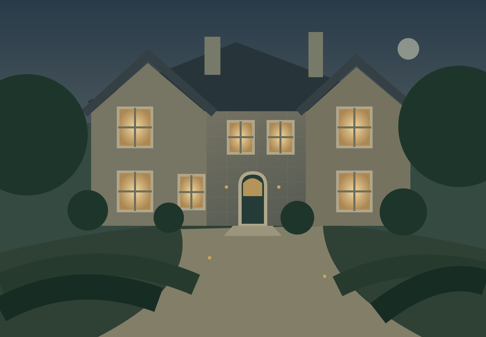

Boutique Hotel · Cotswolds
A Place
Unlike Any Other.
12 individually designed rooms, a restaurant serving seasonal Cotswolds produce, and grounds that change with every season.
An original illustrated hotel, imagined at dusk
Stay a little longer
The Rooms
Original features.
Individual character.
Somewhere to slow down.
Sample room categories, not a live or complete room inventory. Rates are illustrative from the brief.
A closer look
The Aldwick in Detail
Six original architectural and hospitality illustrations, not hotel photographs.
From the kitchen
The Restaurant
“Everything on the menu was either grown here, reared locally, or foraged from the surrounding countryside.”
Head Chef James Cole builds each week's tasting menu around what the garden and our local growers have ready. The season, not the calendar, decides what comes next.
Breakfast is available to all guests. The restaurant welcomes non-residents Thursday–Sunday. Please tell us about dietary requirements when enquiring.
Illustrative seasonal menus, not today's dishes. Dietary suitability requires direct confirmation.
Beyond your room
What to Do
Guest notes
“We stayed for three nights and genuinely didn't want to leave. The food was exceptional and every room detail had been thought about.”Charlotte & Ben W. · Deluxe Room
“A quiet terrace, the last of the evening light, and absolutely nowhere else we wanted to be.”Amelia R. · The Suite
“The sort of breakfast that turns a short stay into a very good idea.”David & Helen M. · Classic Room
Fictional guest notes. First quote supplied by the brief; others are original concept copy.
The heart of the Cotswolds
Getting Here
Two hours from London, five minutes from Bourton-on-the-Water — the heart of the Cotswolds, without the tourist crowds.
Journey times are illustrative brief guidance, not a live route estimate.
By car
Approach Bourton-on-the-Water via the A429. Ask the hotel for precise arrival instructions before travelling. Free parking for guests.
Explore the area ↗By train
Moreton-in-Marsh is a convenient nearby station for the area. Arrange onward transport with a local taxi company. Confirm your route and timetable before departure.
Ask us about arrival ↗A little time away
Is Your Date Available?
Reserve directly for our best rate. Explore your dates with our stay planner, then contact the hotel to confirm.
Best rate direct · Dog friendly · Free parking
Concept planner only. No live availability or reservation.